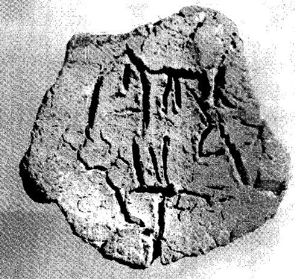
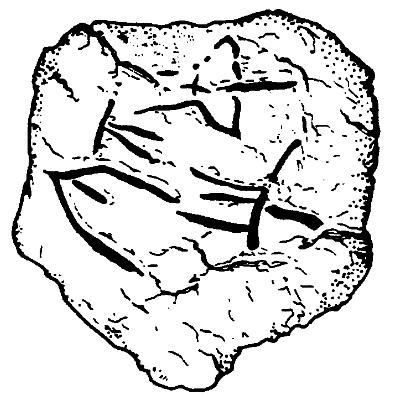

LINEAR A
PYRWc4
Names
PYRWc4, PYR Wc 4
Support
Roundel
Location
Pyrgos
Findspot
Unavailable


Scribe
Unavailable
Context
Unavailable
Dimensions
Catalogue
Readings
1 1 0 TI none 1 1 1 *900 none 1 1 2 I none 1 1 2 SI none
𐘠
𐄁
𐘚
𐘤
TI
*900
I
SI
𐘠
𐄁
𐘚
𐘤
TI
*900
I
SI
PYR Wc 4
(AgNik 12567; Rehak & Younger 1995; Hallager 1996, vol. 2: 196-97)
statement
logogram
no. of impressions
CMS
no.
a.1-2: TI-[•]-I-
SI
b: logogram unknown
2
+
3
II 6, nos. 234 (2 lions attack bull)+235 (woman at shrine)
a: Might the unknown sign be the right-hand part of DU, written small as a ligature against the right "leg" of TI? Thus: TI+DU ?
b: the logogram looks like a double Linear B *141/AURUM, perhaps the Linear A predecessor (Hallager 1996, vol. 2, p. 197).
Commentary © John Younger
References